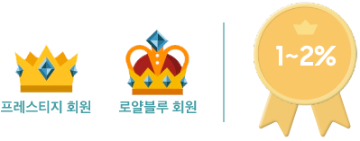
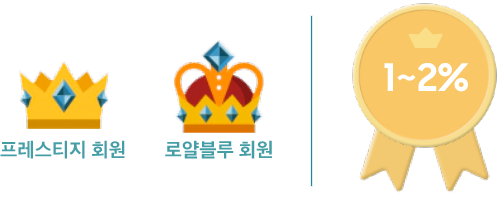
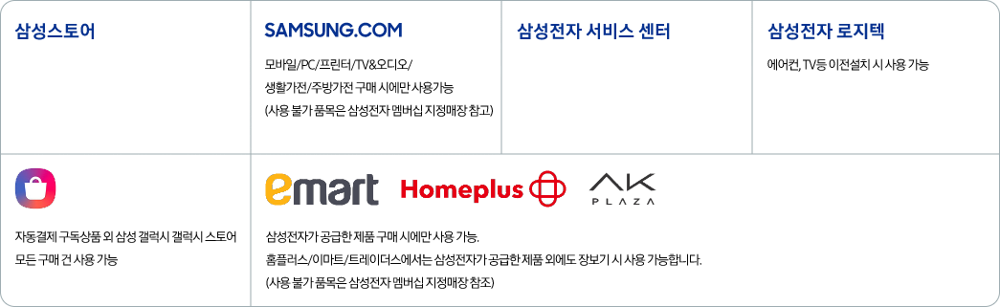
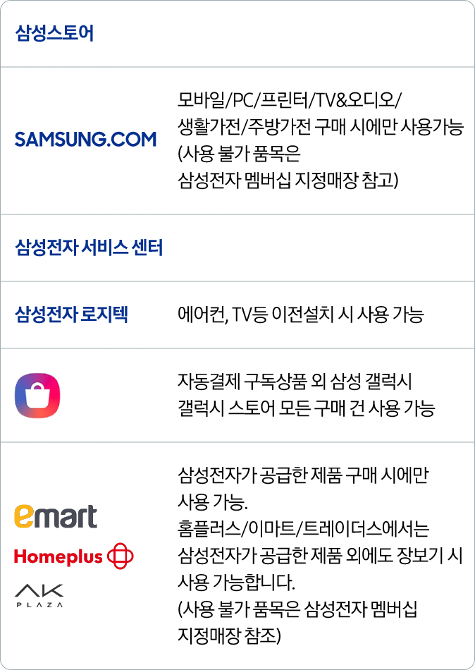

<section class="sec_con sec_point" id="sec_point">
    <div class="inner_1440">
        <div class="pt_common_txt_box">
            <span class="pt_subject pt_bg-image pt_add-bg">멤버십 포인트</span>
            <strong class="pt_sub_title">0.1% 포인트 적립은 기본!</strong>
            <h3 class="pt_title">
                함께 살수록 커지는 <br>
                포인트 혜택을 드려요
            </h3>
        </div>
        
        <div class="pt_point">
            <!-- <div class="pt_point__header">
                <strong class="pt_point__header-desc">제품 기본 적립 포인트 0.1% + 제품별 행사 시 추가 포인트 증정</strong>
                <strong class="pt_point__header-title">다다익선 패키지 포인트</strong>
                <p class="pt_point__header-date en">2023.08.01 <em class="kr">~</em> 2023.08.31</p>
            </div> -->
            <ul class="pt_point__list pt_point__list--top">
                <li class="pt_point__item pt_item pt_item--model">
                    <p class="pt_item__eyebrow">기본포인트</p>
                    <p class="pt_item__desc">
                        제품 기본 적립 포인트 <span class="en">0.1%</span>
                    </p>
                    <div class="img_box pt_item__img">
                        
                        
                    </div>
                    <!-- <div class="blind">
                        <dl>
                            <dt>5만</dt>
                            <dd>스탠다드</dd>
                            <dt>10만</dt>
                            <dd>HERO</dd>
                            <dt>20만</dt>
                            <dd>프리미엄</dd>
                            <dt>40만</dt>
                            <dd>초프리미엄</dd>
                        </dl>
                    </div> -->
                    <p class="pt_item__txt">
                        * 대상 : 삼성전자 맴버십 지정매장에서 구매한 고객 <br>
                        * 월간 적립한도 60,000포인트
                    </p>
                </li>
                <li class="pt_point__item pt_item pt_item--num">
                    <p class="pt_item__eyebrow">추가포인트</p>
                    <p class="pt_item__desc">
                        구매 금액의 <span class="en">2% / 1%</span>
                    </p>
                    <div class="img_box pt_item__img">
                        
                        
                    </div>
                    <!-- <div class="blind">
                        <dl>
                            <dt>5품목 이상 구매 시</dt>
                            <dd>20만</dd>
                            <dt>10품목 이상 구매 시</dt>
                            <dd>50만</dd>
                            <dt>15품목 이상 구매 시</dt>
                            <dd>100만</dd>
                        </dl>
                    </div> -->
                    <p class="pt_item__txt">
                        *대상 : 삼성전자 멤버십 로열블루/프레스티지 등급 고객 <br>
                        * 2년간 적립한도 200,000 / 80,000 포인트
                    </p>
                </li>
            </ul>
        </div>
        <div class="pt_common_notice m_hide">
            <p class="pt_noti_text">삼성전자 포인트의 유효기간은 적립일로부터 3년이며, 일부 포인트의 유효기간은 다를 수 있습니다.</p>
            <p class="pt_noti_text">삼성전자 포인트는 결제 및 배송 완료가 확인된 후 적립됩니다.</p>
            <p class="pt_noti_text">삼성전자 포인트는 지정매장별로 적립 혜택이 적용된 시점이 상이할 수 있으며, 전자제품 판매업자 등 일정 유형의 회원에 대해서는 적립이 제외될 수 있습니다.</p>
            <p class="pt_noti_text">자세한 내용은 삼성전자멤버십 이용 약관을 확인하시거나 멤버십 콜센터(1588-3366)에 문의해주세요.</p>
        </div>
        <div class="pt_table">
            <div class="pt_table__bottom">
                <p class="pt_table__eyebrow">삼성전자 포인트 사용처 안내</p>
                <p class="pt_table__desc">
                    적립된 포인트를 다양한 사용처에서 사용하실 수 있습니다.<br> 포인트를 사용하실 때에는 <br class="m_show">삼성전자 멤버십 카드를 제시 해 주세요.
                </p>
                <div class="img_box pt_table__img">
                    
                    
                </div>
                <div class="blind">
                    <p>삼성스토어, 삼성닷컴 모바일/PC/프린터/TV&오디오/ 생활가전/주방가전 구매 시에만 사용가능 (사용 불가 품목은 삼성전자 멤버십 지정매장 참고), 삼성전자 서비스 센터, 삼성전자 로지텍 에어컨, TV등 이전설치 시 사용 가능, 자동결제 구독상품 외 삼성 갤럭시 갤럭시 스토어 모든 구매 건 사용 가능, 삼성전자가 공급한 제품 구매 시에만 사용 가능. 홈플러스/이마트/트레이더스에서는 삼성전자가 공급한 제품 외에도 장보기 시 사용 가능합니다. (사용 불가 품목은 삼성전자 멤버십 지정매장 참조)</p>
                </div>
            </div>
        </div>
        <div class="pt_common_notice">
            <p class="pt_noti_text">
            적립된 삼성전자 포인트는 다양한 곳에서 사용하실 수 있습니다. 포인트를 사용하실 때에는 삼성전자 멤버십 카드를 제시해 주세요.</p>
            <p class="pt_noti_text">카드를 분실하셨을 경우, 멤버십 콜센터(1588-3366) 또는 삼성닷컴 홈페이지 및 앱 (나의 멤버십 > 멤버십 카드 > 카드 분실 신고)를 통해 분실신고해 주세요. <br/>분실신고하지 않은 카드로 인한 회원의 손해는 책임지지 않습니다.</p>
            <p class="pt_noti_text">삼성전자 멤버십 회원의 포인트 적립/사용 실적은 카드별이 아닌 인별 관리됩니다.</p>
            <p class="pt_noti_text">포인트 사용취소 시 사용되었던 포인트는 다시 복구되며, 기존에 부여되어 있던 유효기간이 적용됩니다. <br>고객님의 포인트는 나의 멤버십- 포인트 또는 어플리케이션, 콜센터를 통해 확인하시기 바랍니다. <br>단, 사용취소된 포인트의 유효기간이 이미 경과한 경우에는 당월 말일 자정(24:00)까지 한시적으로 포인트 사용이 가능합니다.</p>
        </div>
    </div>
</section> 